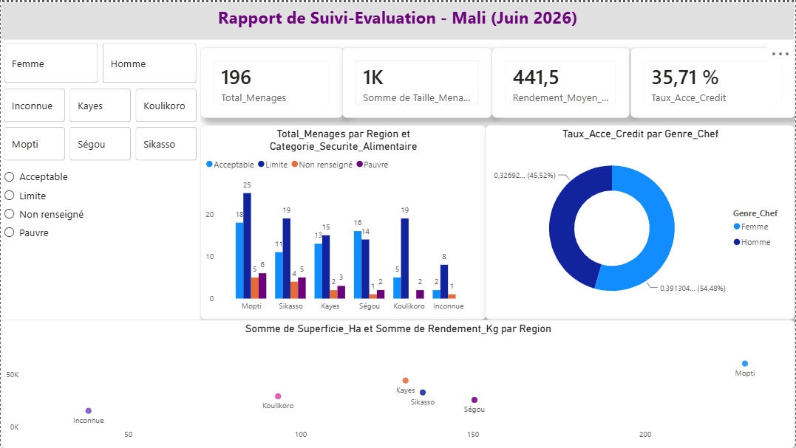

Rapport de Suivi-Évaluation - Mali (Juin 2026)
Femme
Homme
Inconnue
Kayes
Koulikoro
Mopti
Ségou
Sikasso
Acceptable
Limite
Non renseigné
Pauvre
196
Total_Menages
1K
Somme de Taille_Mena...
441,5
Rendement_Moyen_...
35,71 %
Taux_Acce_Credit
Total_Menages par Region et Categorie_Securite_Alimentaire
Acceptable
Limite
Non renseigné
Pauvre
Taux_Acce_Credit par Genre_Chef
Genre_Chef
Femme (54,48 %)
Homme (45,52 %)
Somme de Superficie_Ha et Somme de Rendement_Kg par Region
Étude de cas phare #01
Power BI
DAX
Suivi-Évaluation (MEAL)
Analyse agricole · Mali
Rapport de Suivi-Évaluation — Mali (Juin 2026)
Tableau de bord interactif permettant le suivi de 196 ménages répartis sur 5 régions du Mali (Mopti, Sikasso, Kayes, Ségou, Koulikoro) avec filtres dynamiques par genre du chef de ménage, région et catégorie de sécurité alimentaire.
La question
Quelle est la situation de la sécurité alimentaire, de l'accès au crédit et des rendements agricoles des ménages suivis par région et selon le genre du chef de ménage ?
Ce que j'ai construit
- Indicateurs clés (KPI) dynamiques et mesures DAX de taux d'accès au crédit et de rendement moyen.
- Segmentation croisée par région et sécurité alimentaire (Acceptable, Limite, Pauvre).
- Analyse comparative de l'accès au crédit selon le genre et corrélation superficie / rendement.
Ce que montrent les données
- Mopti concentre le plus grand volume de ménages suivis (54 ménages) et la plus forte production cumulée.
- La catégorie Limite prédomine dans la majorité des régions (25 à Mopti, 19 à Sikasso et Koulikoro).
- Les femmes chefs de ménage représentent 54,48 % de l'accès au crédit contre 45,52 % pour les hommes.
196
ménages suivis
~1 000
personnes couvertes
441,5 kg
rendement moyen
35,71 %
taux d'accès au crédit